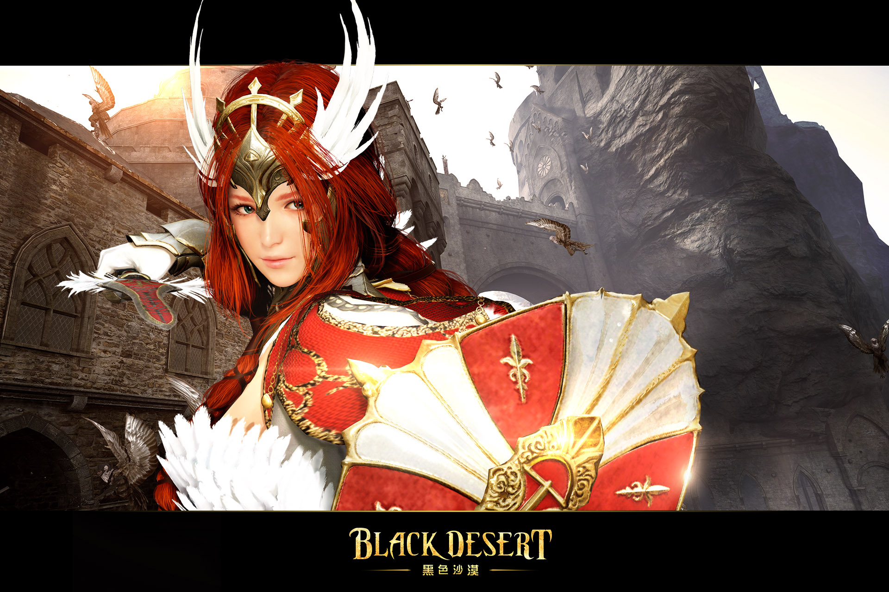

神秘的「黑色魔石」建築了古代文明， 隨之而起的煉金術卻激起人性的貪婪，古代文明因此衰亡。 「黑色魔石」大量存在於卡爾佩恩(Calpheon)與瓦倫西亞(Valencia)間廣闊的沙漠地帶， 卡爾佩恩便將此地稱為「黑色沙漠」。為了爭奪這個資源， 卡爾佩恩發動多次戰爭，瓦倫西亞則因為這些戰爭犧牲了眾多士兵， 血流成河的慘痛歷史則讓它成為瓦倫西亞的「紅色沙漠」。 挾持龐大資本與商業立國的「卡爾佩恩」，以及絕對王政的「瓦倫西亞」， 隱藏的古代歷史與消失的記憶即將隨著探索一一揭曉。
攻擊類型 近距離 一般武器 [主武器]長劍，[輔助武器]盾牌 覺醒武器 大劍 被丹堤利恩陷害而死的孤煙使用過的大劍， 蘊含著孤煙的精神。一般 戰士是能夠熟練地運用長劍攻擊，並搭配盾牌精準防禦的近距離型角色。 單手持劍快速突進到前方壓制敵，發揮強大的體力進行奔跑， 並使用盾牌的輔助防禦等多樣技能， 在戰鬥中有絕對優勢。 熟悉戰士的華麗多樣的動作 就能在近距離作戰中變得更強。覺醒 覺醒的戰士手持大劍發揮更有魄力更強大的技能。 大劍的攻擊範圍更廣， 覺醒的戰士可以自由地轉換各種武器， 並在各種戰鬥中靈活優化攻擊與防禦技能， 是近距離作戰中的核心攻擊力量。
攻擊類型 遠距離 一般武器 [主武器]長弓，[輔助武器]匕首 覺醒武器 精靈劍 神壇樹卡瑪希伯的樹枝， 加上精靈之力製成的劍。一般 行動敏捷的神射手，能在遠距離使用弓箭給予目標致命的一擊， 亦能在敵人逼近時使用踢擊並迅速跳脫。 使用技能時須維持與敵人間的距離， 或是使用強力的技能暫時將敵方的行動限制住。 但攻擊爆發範圍小， 被敵軍包圍時考驗著操作者的技術。覺醒 覺醒的遊俠可以支配擁有 神壇樹卡瑪希伯之力的精靈劍。 與弓箭不一樣，精靈劍蘊藏著精靈的力量， 可以在近距離以及中距離中發出致命的攻擊。 百變的移動步伐混淆敵軍同時， 給出巨大的傷害。
攻擊類型 近距離 + 遠距離魔法 一般武器 [主武器]符咒，[輔助武器]護身符 覺醒武器 死神鐮刀 魔女的始祖卡勒堤安使用過的鐮刀， 封印著卡勒堤安的破壞力量。一般 魔女是黑魔法的驅使者，兼具近距離與遠距離的混合型角色。 右手裝備可放大暗黑氣息的符咒，並拿著特殊護身符。利用黑暗的力量， 在遠距離時擅長以幻術誘敵，接近時再施展魔法讓對手陷入混亂。 不論距離遠近皆可攻擊敵人，還可向對手下咒來形成有利的戰鬥。 唯獨防禦力較弱，主動出擊， 盡量保護自己不受傷害是 魔女在戰場上致勝的關鍵。覺醒 魔女覺醒後將可使用新武器「死神鐮刀」， 有著陰森氣息的刀刃的死神鐮刀， 與魔女的黑魔法結合後可吸走敵人的生命。 在黑暗中可隱藏自己，帶給敵人致命的傷害。 當黑暗之門開啟，看見魔女召喚成群烏鴉的敵人， 沒有一個可以活著回去。
攻擊類型 近距離 一般武器 [主武器]斧頭，[輔助武器]裝飾結 覺醒武器 鐵手炮 潭度與得沃普種族造出來的武器， 重現了古代得沃普製作的鐵手炮。一般 狂戰士手持雙斧狂暴的粉碎所有敵人，是像怪物一般的角色。 比起一對一單挑，擅長使用範圍型傷害技能，可同時應付周遭所有敵手。 用斧頭砍擊，錘擊，擊破地面等，可用多種打擊來擊倒敵人。 還有著可隻身躍起，直接砍倒敵人的強力技能，雖然移動時較為緩慢， 但是消滅敵人時會感到大快人心。覺醒 手持雙斧的巨大怪物， 感覺到狂戰士覺醒後變成了更可怕的存在。 拿在手上的鐵手炮， 已超越了凡人可以領略的範圍， 強大而野蠻的覺醒武器 蘊含著古代得沃普的所有技能。 鐵手炮不僅可擴大攻擊範圍， 更具有強大的破壞力， 讓狂戰士變得更讓人恐懼。